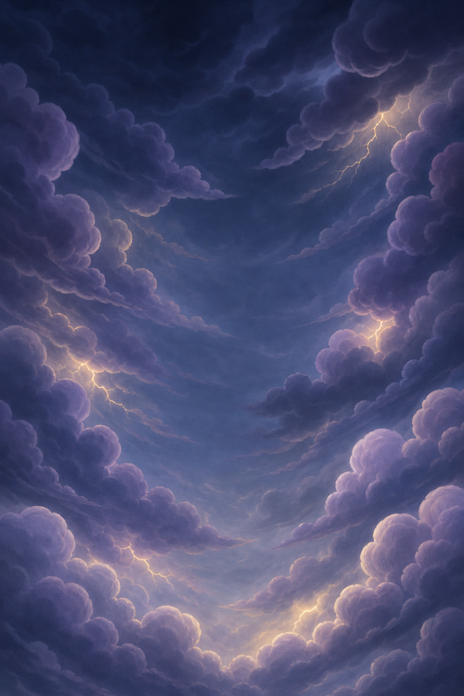
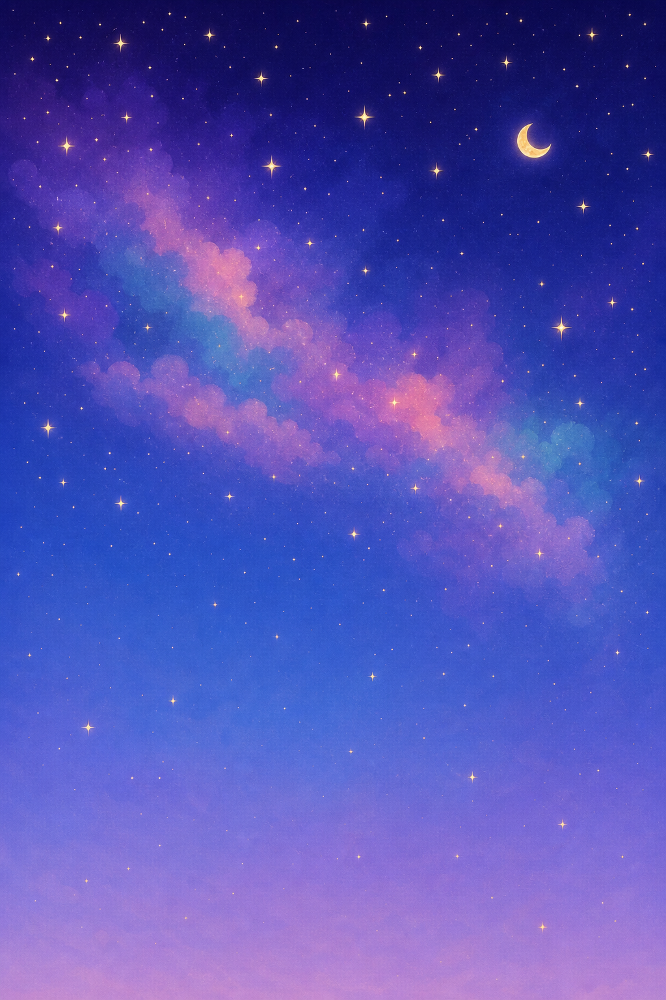

① 実機・各地域の飛び立ち（足元の世界＋地域別の“中身のある空”）
鳥の空域（朝焼けの青空）
雲海（ふわふわ雲海）
嵐（荒天＋稲妻グロー）
星脈（夜空＋星雲＋三日月）
② 生成した空背景（元画像・縦長／登ると上部へ視差スクロール）
sky_birds_v1
sky_mist_v1
sky_storm_v1

sky_stars_v2（星雲を絵本調に修正）

足元の世界は地域共通の透過素材。空だけ地域別に差し替えて特色を出しています。星脈は写実的な星雲だったv1→フラットな絵本調v2に作り直し済み。